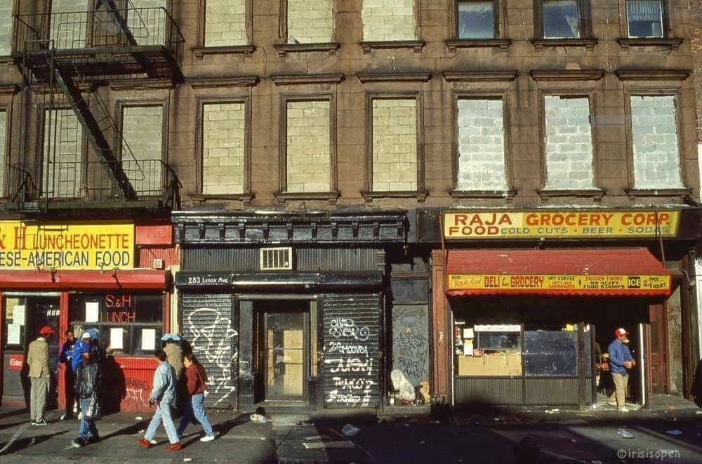
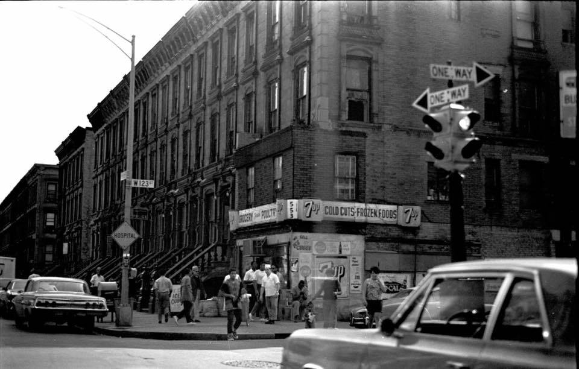
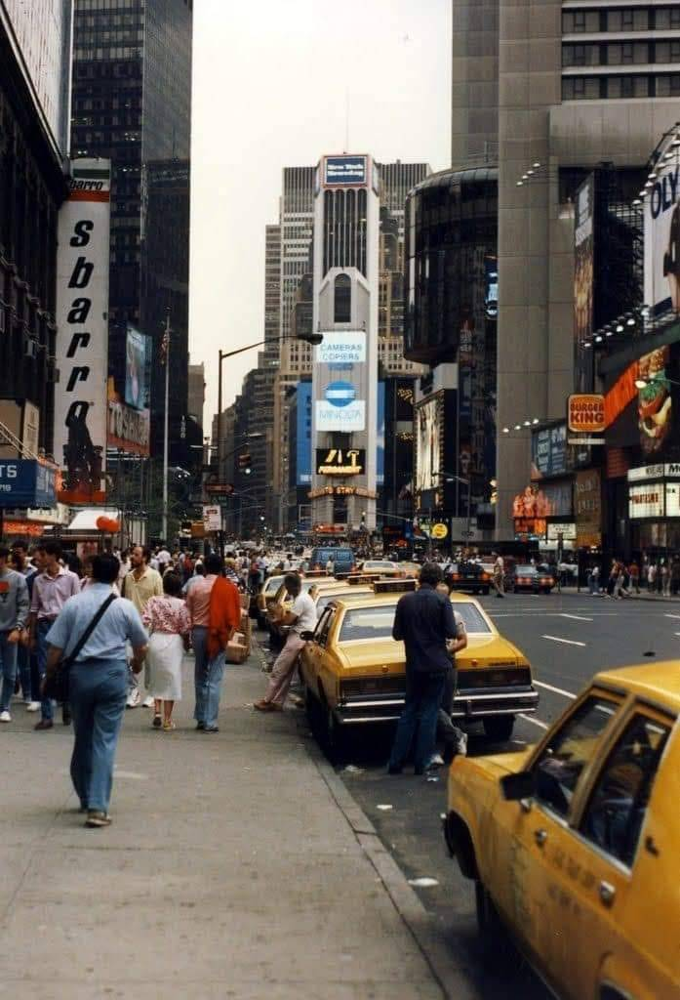
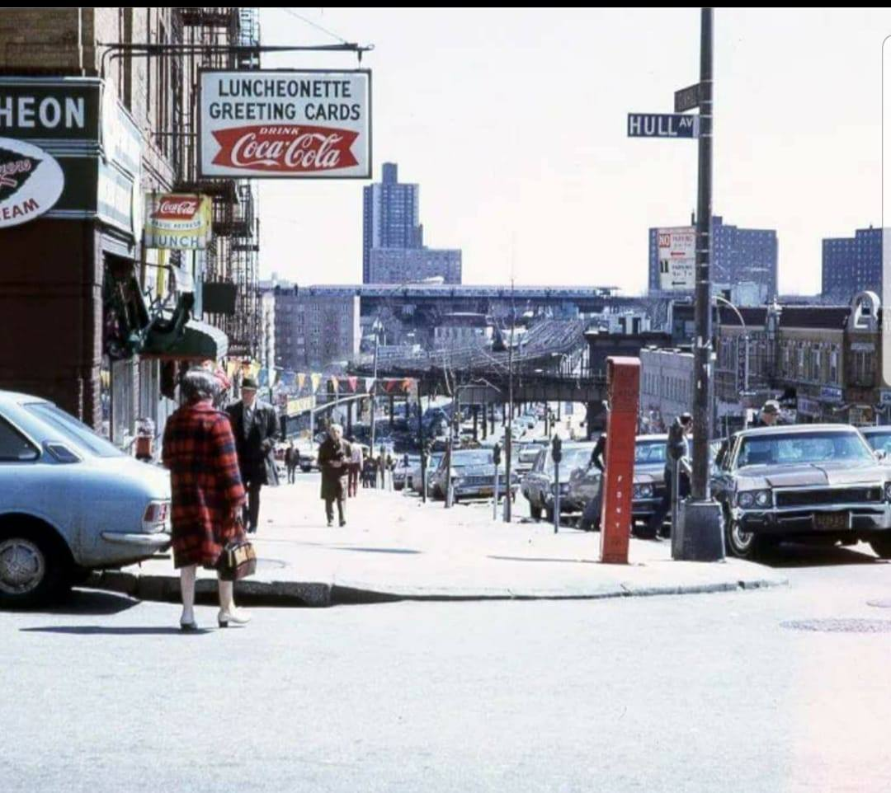
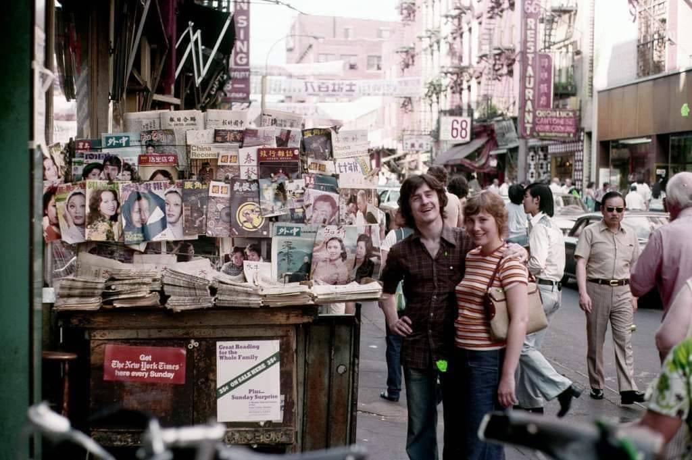
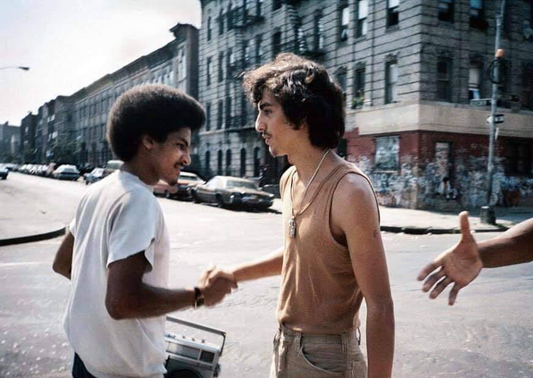
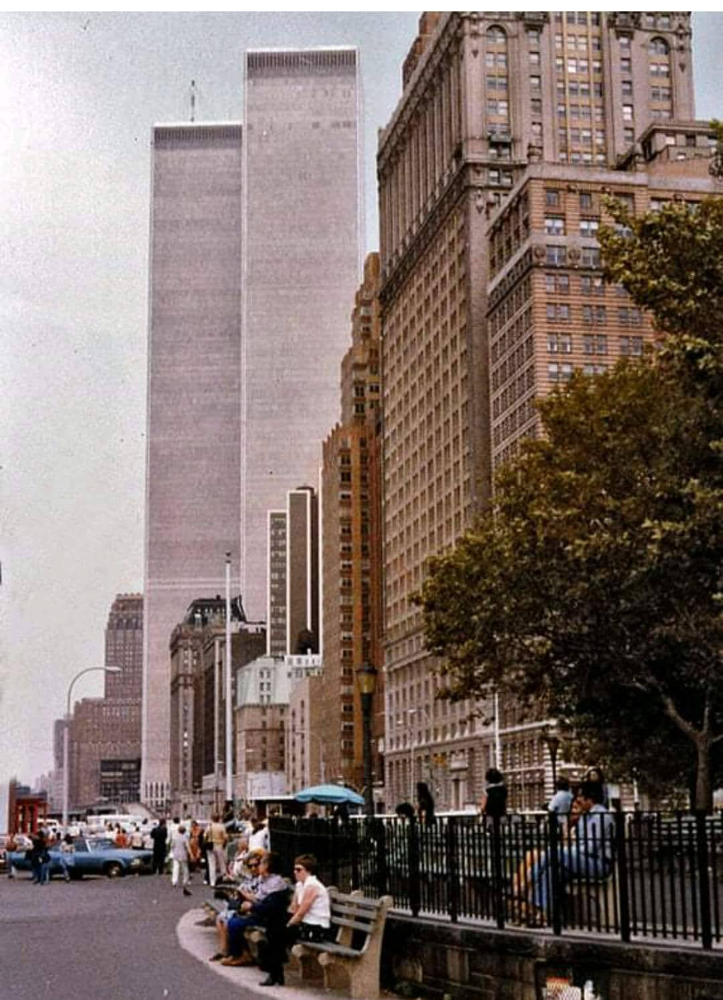
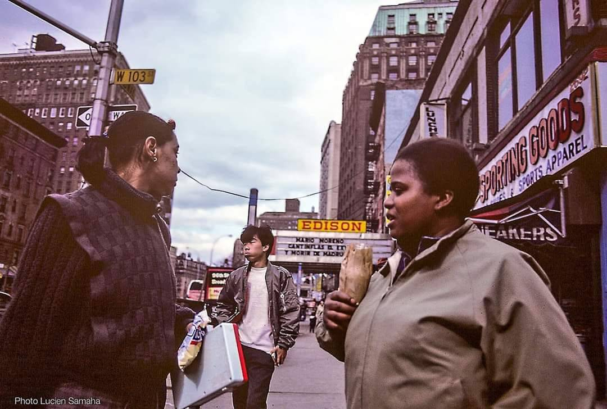
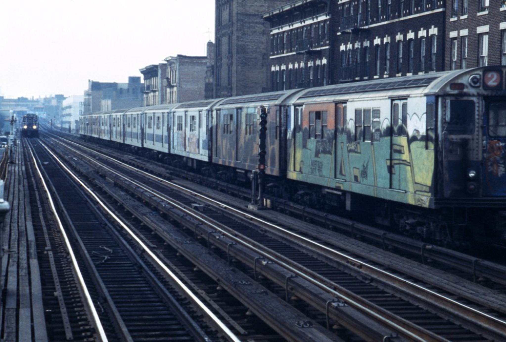

Snowy day on 8th Ave and 22nd St, 1983
Snowy day on 8th Ave and 22nd St, 1983

Lenox Ave in the 80s

Inside the bus on 23rd Street

Washington Heights in the 80s
Buster Brown Shoes, 1985. They used to give kids comic books, toys, and pretzels.
On the LL, 1977

Autumn in New York, 1982

Broadway, between 79th and 80th, 1970s

Jamaica Queens. Jamaica Ave and Sutphin Blvd, 1979

Manhattan Ave and 123rd St, 1969

Times Square 1988

Park Row and Beekman Street, 1970s

Times Square, 1984

Gunhill Road and Hull Avenue in the Bronx, 1970s

Breakin’ at Lincoln Center, 1981

Mott Street, 1970s

West Broadway and Broome Street, 1980
E. 180th St, Bronx
110th and Broadway, 1971

QTIP by JAMEL SHABAZZ

Buds in Bushwick. Bushwick Ave and Moore St, 1970s.
145th and St Nicholas Ave, 1970

The 96th Street station, at Broadway and 93rd. Go figure.

Brook Ave and 148th St, 1982

5th Street and 2nd Avenue, 1983

Battery Park, 1977
58th and 9th, 1987

Broadway and 103rd, 1984.

Bainbridge Avenue and E. 207th, Bronx, 1973

96th and Broadway, 1980

Vintage Dondi, 1980

2 train

Off-street parking in the South Bronx, 1989.
Phonepocalypse